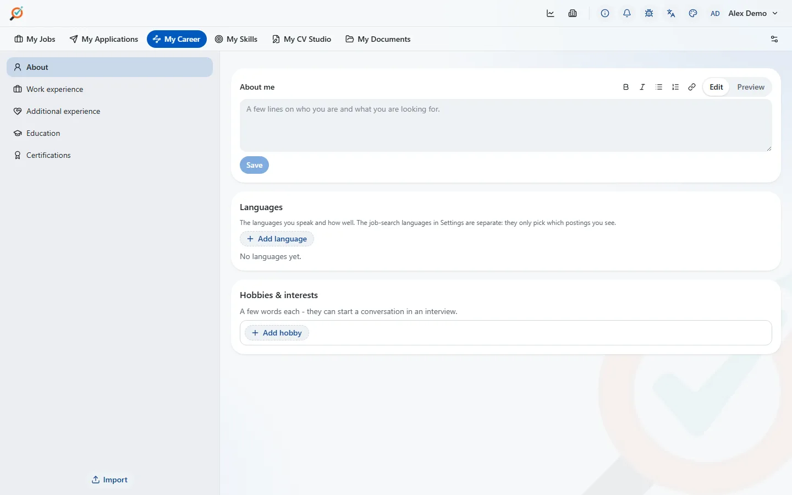

My Career: your skills
One table per kind of skill, each with your two numbers. Change one and the whole list re-scores at once.
Fill it from a LinkedIn profile PDF, a JSON Resume, or your own CV. To read a CV in depth, myJobs writes a prompt: you paste it and your CV into any chat assistant you like, then paste the answer back. myJobs itself sends nothing.
Your positions, education and certifications live here too, and feed the CV builder.
